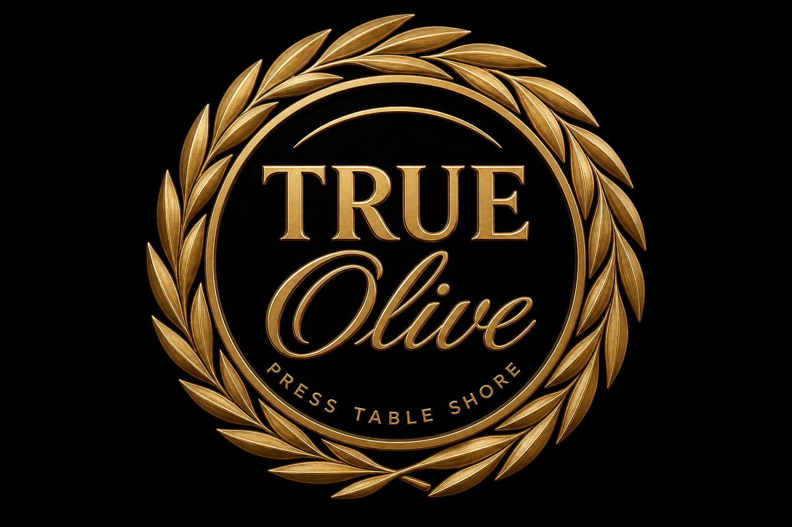
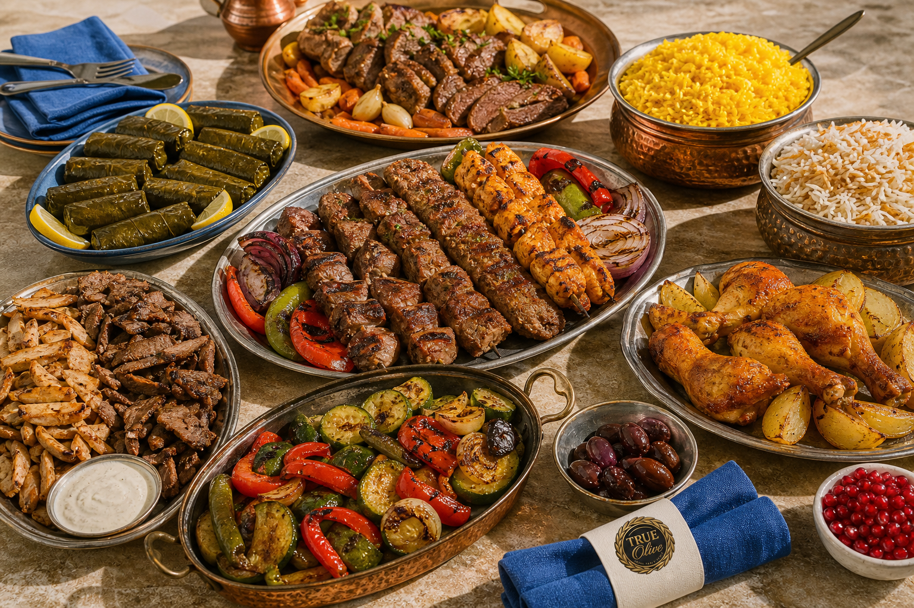
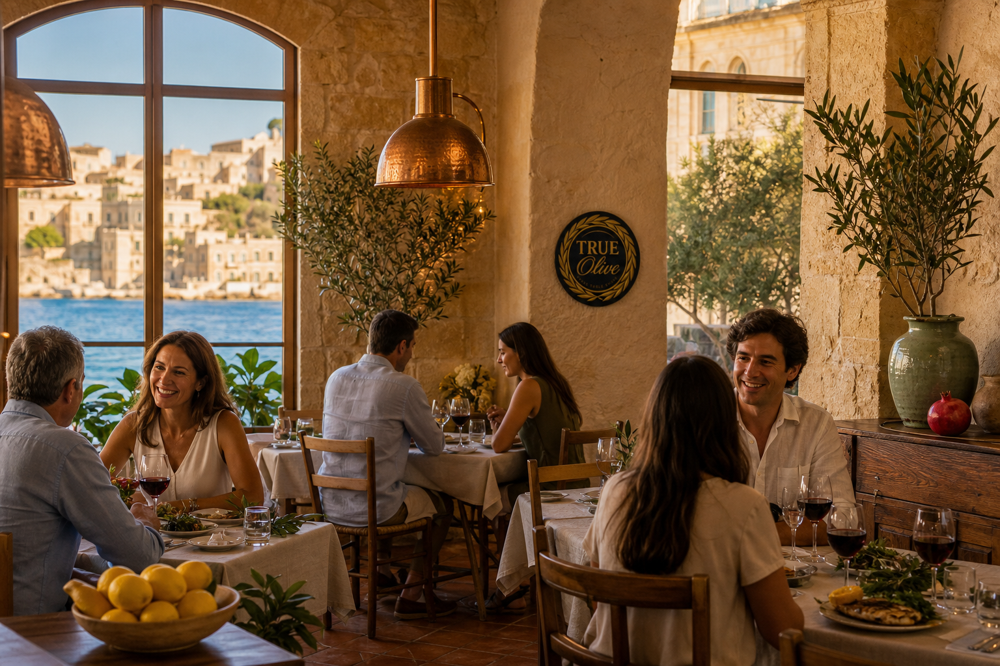
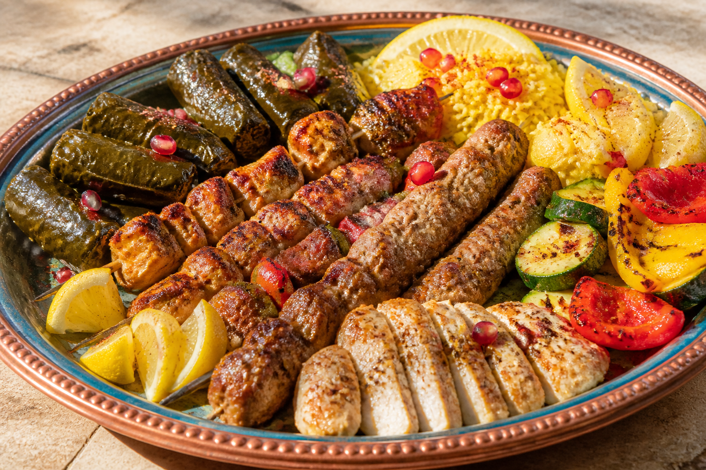

TRUE Olive
Eastern harbor table
The table
Tahini, olive, lemon, sumac, pomegranate, limestone, copper, harbor. Mediterranean restaurant sites that work put the food in full color on the first screen — not a black void, not a decorative script, not a generic overhead bowl. The seal is bronze. The room keeps the rest.

Golden limestone, olive trees, copper light, cream linen, lemon on the sideboard, pomegranate on the pass. Harbor indigo in the glass. This is not a western cove in limewash, and it is not a lantern shop.
Share the table. That is the whole brief.

The eastern harbor. A studio study for a table on the Levantine shore — not a live reservation book. Hours and the menu are how a real restaurant site earns the first click: written in HTML, in the inks of the room.